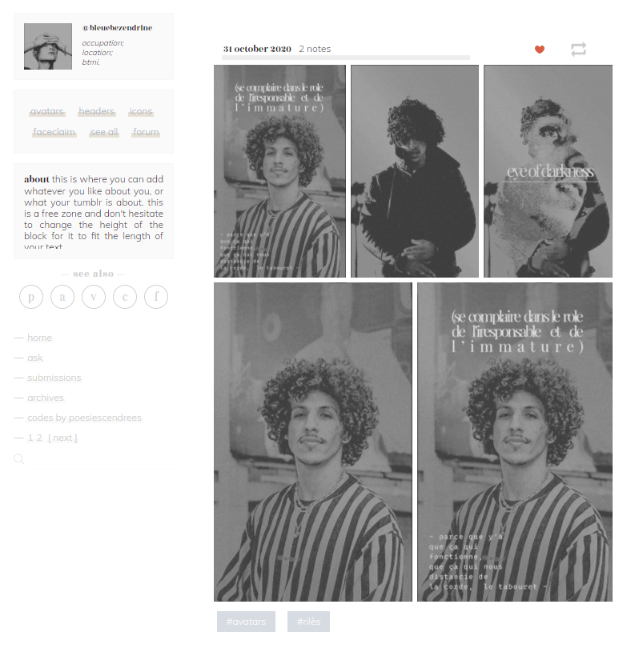
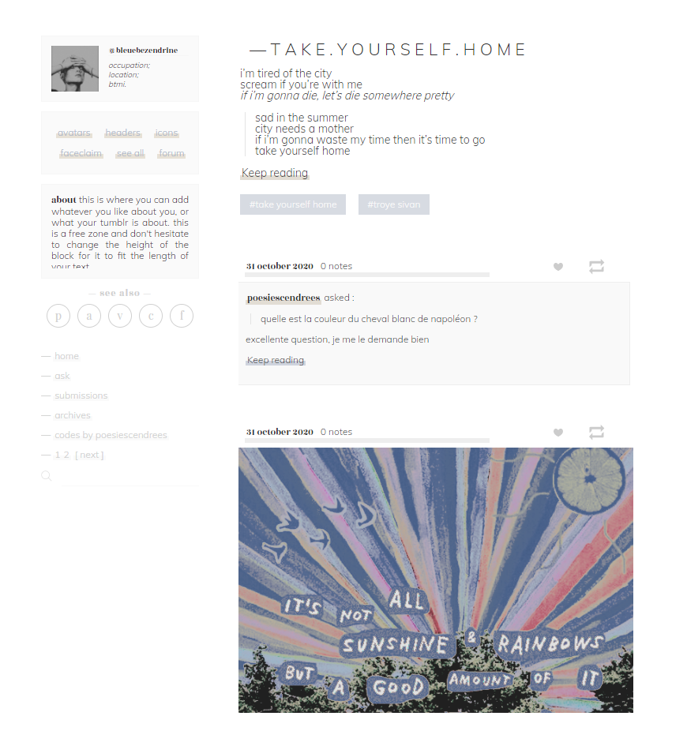
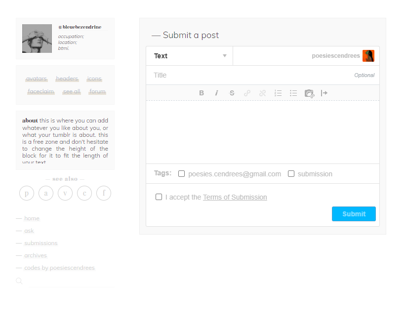
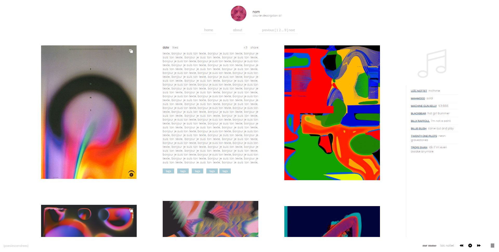
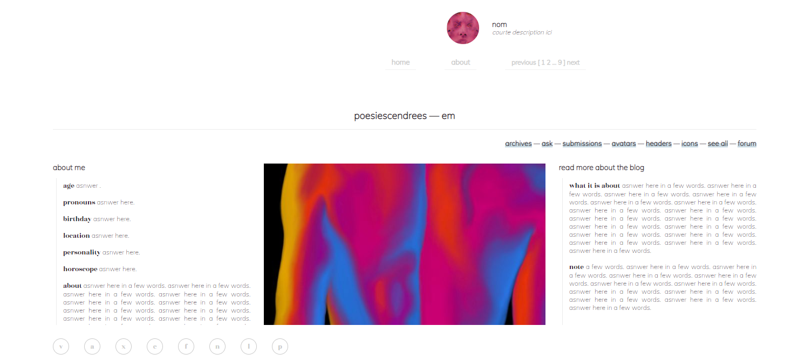
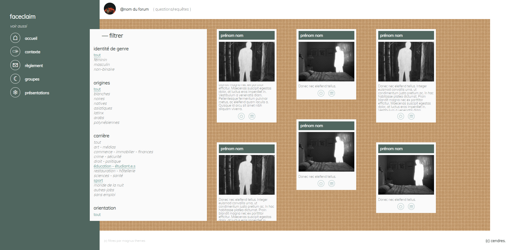

Les thèmes présentés ci-dessous sont réalisés sur la plateforme du réseau social Tumblr. Ce dernier permet à ses utilisateur·rices de personnaliser l'apparence de leurs blogs et leurs pages externes. Je vous propose donc les codes des pages et thèmes que j'ai réalisés jusqu'ici.
Le thème a été mis en ligne sur mon compte tumblr personnel. Il se veut minimaliste et modifiable facilement. Un exemple d'une customisation est disponible ici.



THÈME TUMBLR 2 : minimaliste et en musique
Le design du thème est terminé mais n'est pas encore disponible sur Tumblr. À l'heure actuelle, il est encore nécessaire de le rendre utilisable sur la plateforme. Le template est cependant terminé et dispose d'un lecteur musique intégré. À terme, j'espère pouvoir le rendre modifiable pour le plus grand nombre d'utilisations possible.


J'ai créé un faceclaim qui a pour utilité de regrouper les personnages créés sur des forums littéraires. L'utilisation des filtres sur la page est disponible grâce au travail de Magnus Themes. Le faceclaim a été mis en ligne sur mon compte tumblr personnel.
